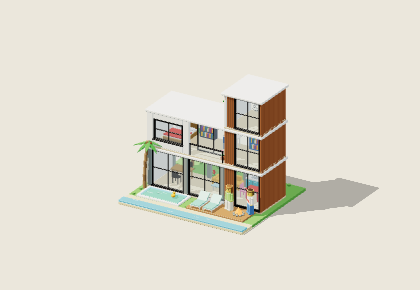
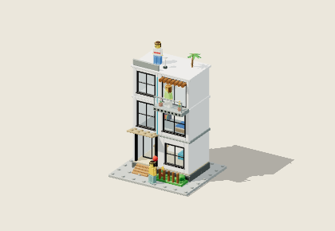
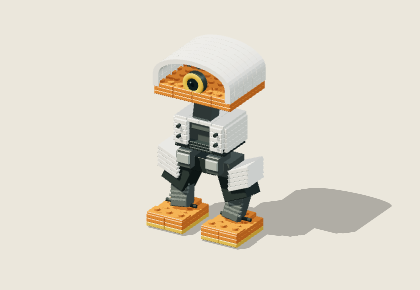
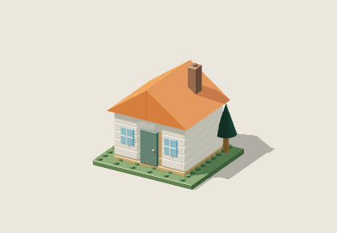
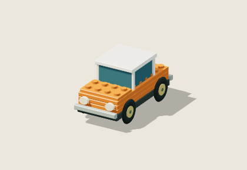
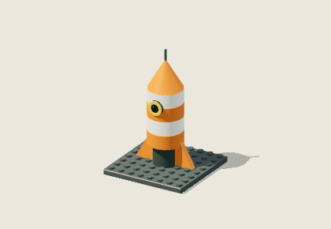
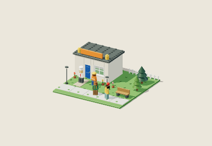
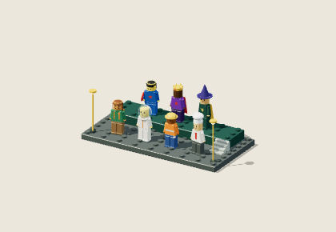

Cada maquete.
Uma montagem própria.
Casas, cidades, robôs e personagens de encaixe. Cada maquete abre em uma apresentação 3D com recursos para explorar: corte por andar, modo noite, giro 360°, vistas e um manual ilustrado feito para ela.

↗Casa moderna
Térreo envidraçado, torre ripada de três andares, interior mobiliado, piscina, palmeiras, fogueira e moradores.
Ver a montagem ↗
↗Sobrado urbano
Três andares com entrada recuada, toldo, varanda florida, brise de madeira e terraço na cobertura.
Ver a montagem ↗
↗Robô explorador
Pés laranja, articulações, torso e carenagem curva. A reconstrução inspirada no vídeo de referência.
Ver a montagem ↗
↗Casa modular
Do terreno ao telhado. Acompanhe as paredes, as esquadrias e cada detalhe da casa.
Ver a montagem ↗
↗Veículo explorador
Chassi, rodas, carroceria e cabine. Cada conjunto tem seu momento de encaixe.
Ver a montagem ↗
↗Foguete orbital
Uma construção vertical, da plataforma de lançamento até a antena no topo.
Ver a montagem ↗
↗Praça LEGO
Loja com porta e vitrine, calçada, árvores, flores, postes, banco e quatro personagens animados.
Ver a montagem ↗
↗Turma de personagens
Sete minifiguras customizáveis em um palco de dois níveis: chapéus, expressões, estampas e acessórios.
Ver a montagem ↗